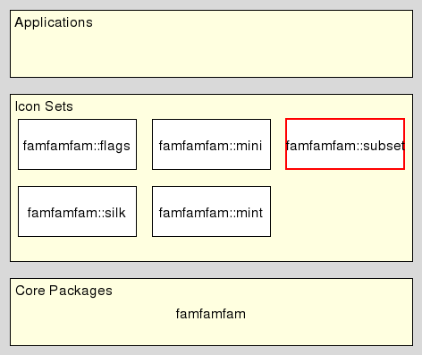

famfamfam::subset - FamFamFam Sub Setting
Welcome to famfamfam, a set of packages providing access to the same-named icon sets created by Mark James, at http://www.famfamfam.com/lab/icons/
This package is a helper to ease the creation of icon packages which are a subset of one or more icon packages based on the famfamfam core.
It resides in the Icon Set level of the architecture 
This method starts the generation of a new icon package, with the given name and version. The package is assembled in the directory path. The directory will be created if necessary.
The result of the method is the empty string.
An error will be thrown if a package is already in assembly.
After this method has been issued the methods save and done can be used to add icons to the new package, and to complete the assembly.
As a side-effect the famfamfam core is configured with an callback which will automatically save all icons which are loaded by famfamfam core based packages.
This method adds the specified icon to the icon package started with method new.
The result of the method is the empty string.
An error will be thrown if no package is in assembly.
This method completes the generation of the icon package started with method new.
The result of the method is the empty string.
An error will be thrown if no package is in assembly.
The auto-save callback installed by new is removed.
This document, and the package it describes, will undoubtedly contain bugs and other problems. Please report such at the FamFamFam Tcl Tracker. Please also report any ideas for enhancements you may have for either package and/or documentation.
Icon sets
Copyright © 2012 Andreas Kupries <andreas_kupries@users.sourceforge.net>
Copyright © 2012 Documentation, Andreas Kupries